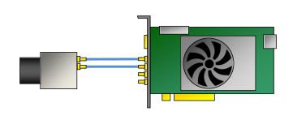

Configuring a CXP-12 Interface Card#
Info
This topic covers basic use cases. For in-depth information about the software features of the interface card, see the following documents:
Configuring the interface card is especially useful in the following situations:
- You want to change the applet used by the interface card.
- You want to trigger the connected Basler boost CXP-12 camera via the interface card.
- You want to perform debayering on the interface card to increase the performance of your imaging system.
- You want to use an output format that is not available on your camera, e.g., a 16-bit mono format.
- You want to configure the trigger signals received or sent by the interface card.
Available Applets and Default Applets#
Depending on the interface card model, the following applets are available and set as default:
| Applet Name | Available For Interface Card … | Default Applet On Interface Card … |
|---|---|---|
| Acq_SingleCXP12Area | 1C, 2C, 4C | 1C |
| Acq_DualCXP12Area | 2C, 4C | 2C |
| Acq_TripleCXP12Area | 4C | - |
| Acq_QuadCXP12Area | 4C | 4C |
Choosing the Right Applet#
If you are using single-channel (1-CXP) cameras only, the default applet will always work for you and you don't have to change it.
However, if you are using multi-channel (e.g., 2-CXP or 4-CXP) cameras, you must choose the right applet for your camera setup. Otherwise, the camera may not work or camera performance may be significantly reduced.
Which applet is the right one depends on the amount of cameras, the amount of channels per camera, and the desired ROI step size.
The ROI step size depends on the parallelism of the image preprocessing and therefore varies by camera and frame grabber.
CXP-12 Interface Card 1C#
| Amount of 1-Channel Cameras | Amount of 2-Channel Cameras | Amount of 4-Channel Cameras | Applet | ROI Step Size [px] | Topology |
|---|---|---|---|---|---|
| 1 | Acq_SingleCXP12x1Area | 32 |
CXP-12 Interface Card 2C#
| Amount of 1-Channel Cameras | Amount of 2-Channel Cameras | Amount of 4-Channel Cameras | Applet | ROI Step Size [px] | Topology |
|---|---|---|---|---|---|
| 1 | Acq_DualCXP12Area | 16 | |||
| 2 | Acq_DualCXP12Area | 16 | |||
| 1 | Acq_SingleCXP12Area | 32 |  |
CXP-12 Interface Card 4C#
| Amount of 1-Channel Cameras | Amount of 2-Channel Cameras | Amount of 4-Channel Cameras | Applet | ROI Step Size [px] | Topology |
|---|---|---|---|---|---|
| 1 | Acq_QuadCXP12Area | 8 |  | ||
| 2 | Acq_QuadCXP12Area | 8 | |||
| 3 | Acq_QuadCXP12Area | 8 | |||
| 4 | Acq_QuadCXP12Area | 8 | |||
| 1 | Acq_DualCXP12Area | 16 |  | ||
| 2 | Acq_DualCXP12Area | 16 | |||
| 1 | Acq_SingleCXP12Area | 32 | |||
| 1 | 1 | Acq_TripleCXP12Area | 8 | ||
| 2 | 1 | Acq_TripleCXP12Area | 8 |
Changing the Applet#
Info
Changing the applet is only possible on the 2C and 4C interface cards. On the CXP-12 Interface Card 1C, the applet is preset to Acq_SingleCXP12Area and can't be changed.
The applet running on the interface card defines its functionality. For certain camera setups, you may have to change the default applet.
To change the applet used by the interface card, set the InterfaceApplet parameter to the name of the applet to be loaded, e.g., Acq_DualCXP12Area.
Using the Interface Card to Trigger a Basler boost CXP-12 Camera#
Info
This section is only relevant if you specifically want to trigger the camera via the interface card. Usually, the camera is triggered via the camera's I/O connector. For more information, see Triggered Image Acquisition.
Hardware Triggering (External)#
With external triggering enabled, you can send trigger input signals to the interface card, and the interface card forwards these signals to the Basler boost camera.
To configure the interface card for external hardware triggering:
- Set the
AreaTriggerModeparameter toExternal. - Set the
TriggerInSourceparameter to the desired "Front GPI" input line.
For example, if you want to use GPI0 (pin 11 and 12 on the interface card) for external triggering, set the parameter toFrontGpiTriggerSource0. - Set the
TriggerCameraOutSelectparameter to the corresponding "Bypass" option.
For example, if you selectedFrontGpiTriggerSource0, set theTriggerCameraOutSelectparameter toBypassFrontGpi0. - Set the
TriggerStateparameter toActive. - If necessary, configure the trigger signals as described below.
All trigger signals will be forwarded to the camera's source signals CxpTrigger0 and CxpTrigger1 (there is currently no difference in behavior between the two lines). The signals can be used for various purposes. The most common use case is image acquisition. See the example below.
Hardware Triggering (Internal)#
With internal triggering enabled, the interface card generates trigger signals internally at a specified frequency. All external trigger signals will be ignored.
To configure the interface card for internal hardware triggering:
- Set the
AreaTriggerModeparameter toGenerator. - Set the
TriggerOutputFrequencyparameter to the desired trigger output frequency. For example, if you set the parameter to 8, the interface card will generate 8 trigger signals per second. - Set the
TriggerCameraOutSelectparameter to the desired output line, e.g.,PulseGenerator0. - Set the
TriggerStateparameter toActive.
Now, whenever you start image acquisition, the interface card will generate trigger signals at the specified frequency.
All trigger signals will be forwarded to the camera's source signals CxpTrigger0 and CxpTrigger1. The signals can be used for various purposes. The most common use case is image acquisition. See the example below.
Example: Using the Trigger Signals for Image Acquisition#
To use the external or internal trigger signals generated by the interface card to acquire images:
- On the camera, set the
TriggerSelectorparameter toFrameStart. - Set the
TriggerModeparameter toOn. - Set the
ExposureModeparameter toTimed. - Set the
TriggerSourceparameter toCxpTrigger0orCxpTrigger1.
As there is currently no difference in behavior between the two lines, you can choose either one of them.
Now, the camera will acquire an image each time the interface card receives or generates a trigger signal.
Info
You can use the trigger signals as the source for any Basler boost camera feature that can be controlled by a signal source. For example, setting the CounterTriggerSource parameter to CxpTrigger0 allows you to control the Counter feature using the interface card.
Performing Debayering on the Interface Card#
With the CXP-12 Interface Card 1C, you can perform debayering on the interface card. This reduces computing load on the camera and the host computer.
To do so:
- On the camera, set the
PixelFormatparameter to a Bayer pixel format, e.g.,BayerRG12. - On the interface card, set the
AutomaticFormatControlparameter tofalse.
This allows you to set the output format independently of the pixel format used by the camera. - On the interface card, set the
Formatparameter to the corresponding RGB pixel format.
The bit depth must be three times the bit depth of the Bayer pixel format. For example, BayerRG12 (camera) = Color36bit (interface card).
Now, the interface card will perform debayering on the camera's raw image data and output RGB image data.
Info
Make sure that you set the correct RGB pixel format in step 3 above. Otherwise, images will not be acquired properly.
Using Output Formats not Available on the Camera#
The Basler boost camera can output image data in a number of pixel formats, e.g., Bayer RG 8 or RBG 8. For more information, see the pixel format topic.
If your required pixel format is not available on the camera and you also want to avoid image conversion on the host computer, you may be able to use one of the pixel formats provided by the interface card.
The interface card provides the following formats:
| Gray8bit | Gray10bit | Gray12bit | Gray16bit |
| Color24bit | Color30bit | Color36bit | Color48bit |
| Bayergr8 | Bayergr10 | Bayergr12 | Bayergr16 |
| Bayerrg8 | Bayerrg10 | Bayerrg12 | Bayerrg16 |
| Bayergb8 | Bayergb10 | Bayergb12 | Bayergb16 |
| Bayerbg8 | Bayerbg10 | Bayerbg12 | Bayerbg16 |
To use an output format not available on the camera:
- On the camera, set the
PixelFormatparameter to the desired camera pixel format, e.g.,Mono12. - On the interface card, set the
AutomaticFormatControlparameter tofalse.
This allows you to set the output format independently of the pixel format used by the camera. - On the interface card, set the
Formatparameter to the desired output format, e.g.,Gray16bit.
With the example values above, the interface card will output 16-bit image data based on 12-bit camera image data. Padding bits (zeros) will be inserted as illustrated below.
Configuring the Trigger Signals using the gpioTool#
With the gpioTool command line tool, you can configure the physical properties of the trigger signals received or sent by the interface card:
- You can configure the input lines to receive single-ended or differential signals.
- You can configure the input lines to operate in pull-up or pull-down mode.
- You can specify whether output signals should be inverted.
The gpioTool is included in the pylon Camera Software Suite.
To start the tool:
- Open a Command Prompt window (Windows) or Terminal window (Linux).
-
Change to the bin directory of your pylon installation:
- Windows (64 bit): %programfiles%\Basler\pylon x\Runtime\x64\pylonCXP\bin
- Windows (32 bit): %programfiles%\Basler\pylon x\Runtime\Win32\pylonCXP\bin
- Linux: /opt/pylon/lib/pylonCXP/bin
-
Start the gpioTool using the options described below.
Options#
The following options are available:
gpioTool -b [board_index]
-g
-v
-s [bank]:[settings]
-h
-b [board_index]
Specify which CXP-12 Interface Card in your system you want to address. This parameter is mandatory for all options except -h.
The value range of [board_index] is the index numbers of all CXP-12 Interface Card boards installed in your system. If you only have one CXP-12 Interface Card in your system, set [board_index] to 0.
-b [board_index] -g
Show the current GPIO bank settings of the CXP-12 Interface Card specified.
-b [board_index] -v
Show the current GPIO bank settings with verbose output.
-b [board_index] -s [bank]:[settings]
Configure the GPIO bank on the CXP-12 Interface Card specified.
[bank] specifies the index number of the GPIO bank. On the CXP Interface Card 1C, exactly one GPIO bank (the front GPIO) is available. Therefore, always set [bank] to 0.
[settings] configures the settings. See below.
-h
Show help.
Settings#
For the [settings] part in -b [board_index] -s [bank]:[settings], the following settings are available:
| Setting | Value | Result |
|---|---|---|
[signal] | se | Configures the input lines to receive single-ended signals. |
[signal] | ds | Configures the input lines to receive differential signals. |
[pull-up-down] | pu | Configures the input lines to operate in pull-up mode.a |
[pull-up-down] | pd | Configures the input lines to operate in pull-down mode.b |
[inversion] | ni | Disables inversion for the output lines. |
[inversion] | in | Enables inversion for the output lines. |
-
In most applications, you will need to configure this mode. The interface card activates a 10 k pull-up resistor to receive signals from NPN transistors (open collector, open drain).
-
The interface card activates a 10 k pull-down resistor to receive signals from PNP transistors (open emitter, open source).
You must enter the settings in the following format: [signal],[pull-up-down],[inversion]. Example: ds,pu,ni
Alternatively, you can set [settings] to default. This resets the configuration of a GPIO bank.
Example#
gpioTool -b 0 -s 0:ds,pu,ni
This command configures the interface card as follows:
-b 0: Configure the GPIOs on board 0.-s: Start the actual configuration.0:: Configure GPIO bank 0 (front GPIO).ds,pu,ni: Configure the front GPIO to receive differential signals (ds), to work in pull-up mode (pu), and to send the outgoing signals not inverted (ni).
Resetting the Configuration#
To reset a board and GPIO bank to the default settings, start the gpioTool with [settings] set to default:
gpioTool -b [board_index] -s [bank]:default
Example: gpioTool -b 0 -s 0:default
Sample Code#
// Select the Acq_SingleCXP12Area applet
camera.GetTLParams().InterfaceApplet.SetValue(Acq_SingleCXP12Area);
// Configure the interface card for external triggering
camera.GetTLParams().AreaTriggerMode.SetValue(AreaTriggerMode_External);
camera.GetTLParams().TriggerInSource.SetValue(TriggerInSource_FrontGpiTriggerSource0);
camera.GetTLParams().TriggerCameraOutSelect.SetValue(TriggerCameraOutSelect_BypassFrontGpi0);
camera.GetTLParams().TriggerState.SetValue(TriggerState_Active);
// Configure the interface card for internal triggering
camera.GetTLParams().AreaTriggerMode.SetValue(AreaTriggerMode_Generator);
camera.GetTLParams().TriggerOutputFrequency.SetValue(8);
camera.GetTLParams().TriggerCameraOutSelect.SetValue(TriggerCameraOutSelect_PulseGenerator0);
camera.GetTLParams().TriggerState.SetValue(TriggerState_Active);
// Use the external or internal trigger signals for image acquisition
camera.TriggerSelector.SetValue(TriggerSelector_FrameStart);
camera.TriggerMode.SetValue(TriggerMode_On);
camera.ExposureMode.SetValue(ExposureMode_Timed);
camera.TriggerSource.SetValue(TriggerSource_CxpTrigger0);
// Perform debayering on the interface card (Bayer RG 12 --> RGB 36 bit)
camera.PixelFormat.SetValue(PixelFormat_BayerRG12);
camera.GetTLParams().AutomaticFormatControl.SetValue(false);
camera.GetTLParams().Format.SetValue(Format_Color36bit);
// Configure the interface card to output 16-bit mono image data based on
// 12-bit mono image data from the camera
camera.PixelFormat.SetValue(PixelFormat_Mono12);
camera.GetTLParams().AutomaticFormatControl.SetValue(false);
camera.GetTLParams().Format.SetValue(Format_Gray16bit);
This sample code is only available in C++ language.
You can also use the pylon Viewer to easily set the parameters.